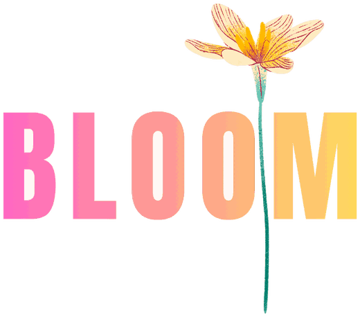

Diëtetiek & bekkenfysiotherapie
Niemand heeft je voorbereid
op de overgang
En toch maken miljoenen vrouwen deze fase door. In negen modules leer je wat er in je lichaam verandert — hormonen, voeding, bekkenbodem, stemming, energie — en wat je er zelf aan kunt doen. Gemaakt door een diëtist en een bekkenfysiotherapeut.
Geen snelle oplossingen. Wel duurzame balans.

Foto volgt
Klaprozenveld
Uit de reel van 19 juni — staand bijgesneden, origineel opvragen